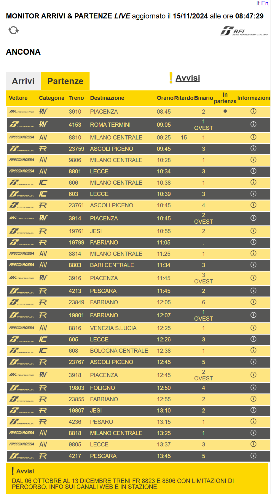
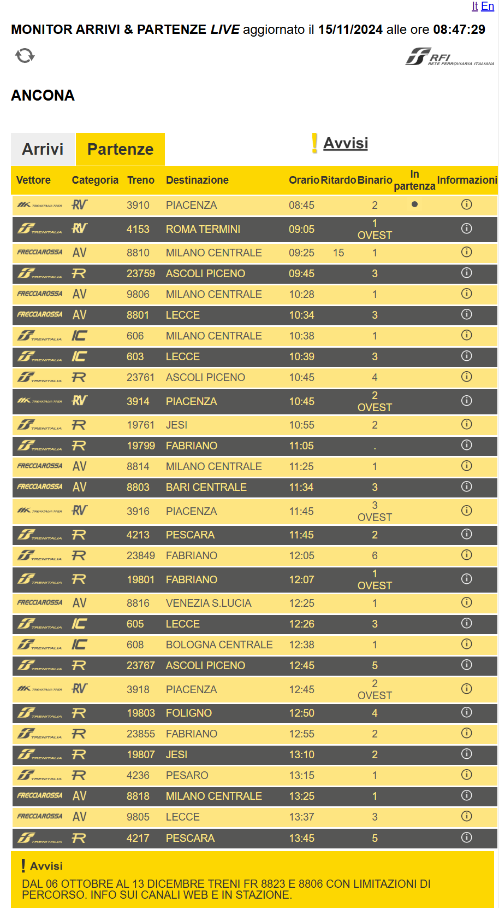
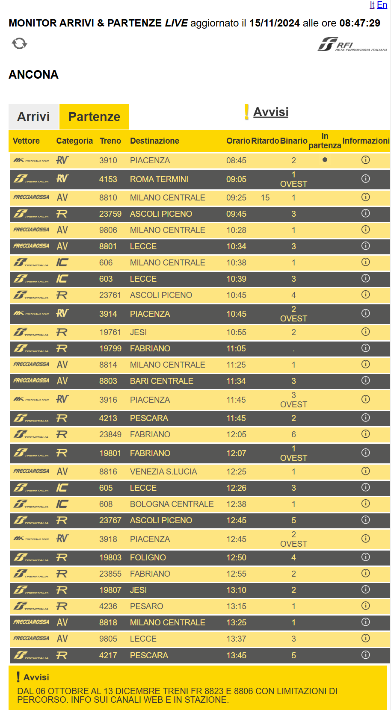

Orari Treni
 

Questa pagina emula la pagina web di una impresa operante nel settore turistico come un albergo e/o simili. L'obiettivo di questa pagina è quello di mostrare come l'IA possa sistematicamente accedere alle informazioni online e riunirle a disposizione di un utente in un solo luogo.
